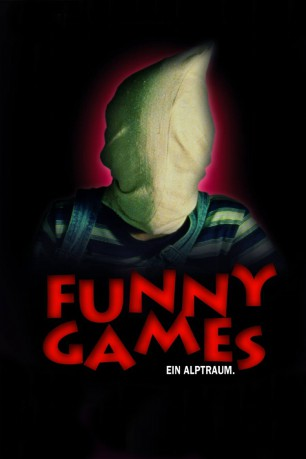

#3941 Funny Games
 
 IMDB-Wertung: 7.6 / 10
IMDB-Wertung: 7.6 / 10  Metascore: 0
Metascore: 0 
Für Anna, Georg, Sohnemann und dem lieben Hundi soll es ein schöner Urlaub werden. Im großen Ferienhaus will die wohlhabende Familie endlich mal ausspannen, golfen, Boot fahren und grillen. Doch die Ruhe wird durch zwei wohl erzogene junge Männer gestört, die sich als waschechte Psychopathen entpuppen. Beide rufen sich als Peter und Paul, Tom und Jerry oder auch Beavis und Butthead und terrorisieren die Familie...
Jahr: 1997
Dauer: 108 Minuten
FSK: 18
Land: Österreich Studio: Concorde-Castle Rock/TurnerTonspuren:
Untertitel:
Auflösung: 1080p (1920x1040) Größe: 7823 MB
Genre: Thriller, Horror, Drama, Krimi
Regisseur: Michael Haneke
Drehbuch: Michele Mulroney
Soundtrack:
Darsteller:
 Susanne Lothar als Anna
Susanne Lothar als Anna Ulrich Mühe als Georg
Ulrich Mühe als Georg- Arno Frisch als Paul
- Frank Giering als Peter
- Stefan Clapczynski als Schorschi
- Doris Kunstmann als Gerda
- Christoph Bantzer als Fred
- Wolfgang Glück als Robert
- Susanne Meneghel als Gerdas Schwester
- Monika Zallinger als Eva
Datei: X:\FSK18-1900-1999\Funny Games (1997, FSK18, 1920x1040).mkv seit 04.07.2016
Festplatte: FSK18
 Es gibt insgesamt 108 Filme in der Gruppe 'FSK18-1900-1999'
Es gibt insgesamt 108 Filme in der Gruppe 'FSK18-1900-1999'